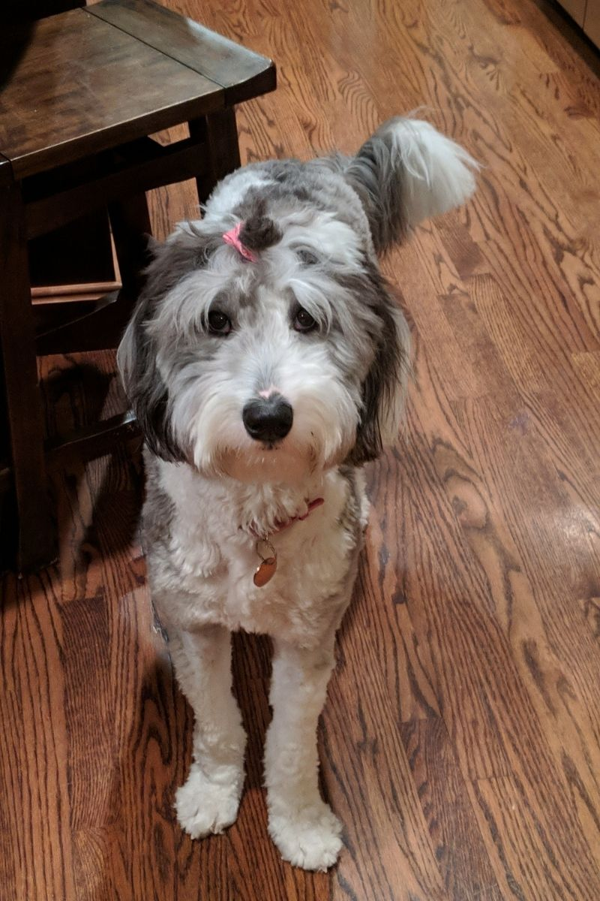
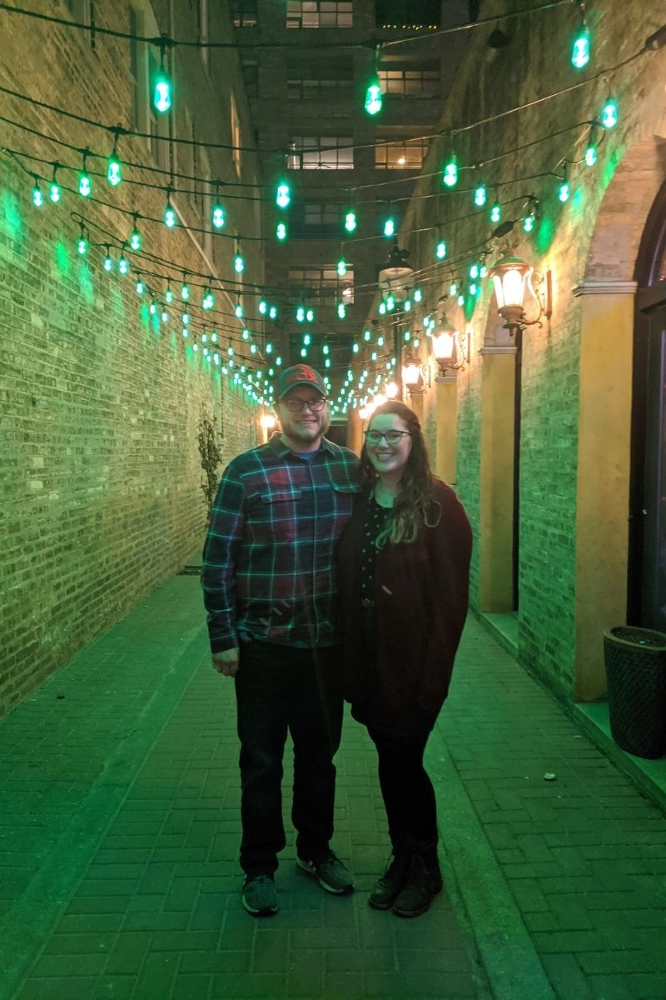

About Me
My name is Drew Snarski and I am a 21 year old student at IIT studying ITM. I started at the University of Dayton, in Dayton Ohio, studying Computer Engineering. I didnt enjoy Dayton, so I took some time at Harper college and re-evaluated what I wanted to major in. I decided that I did not care much for actually making software, but managing them, so I switched to ITM instead. I have been interested in computers for really as long as I remember, but I really discovered I had a passion for them in high school. I have never built my own computer, but I did enough upgrades on a pre-built one I bought to essentially say I built it myself. Currently, I work at Chalet Nursery in Wilmette, working in marketing and e-commerce.
This is my dog Zoey. She is a Sheepadoodle, meaning she is an Old English Sheepdog Poodle mix. She will turn 2 in May.
Here is a video of Zoey opening her Christmas present
Here is a picture of me with my girlfriend, Talia. We have been dating for over 5 years now. This picture was taken last year when we were celebrating our 21st birthdays, pre-lockdown.
